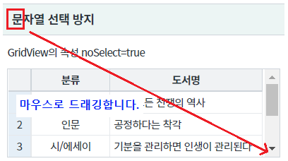
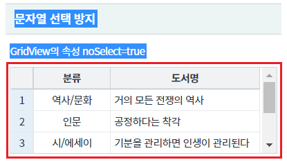
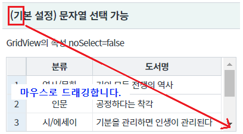
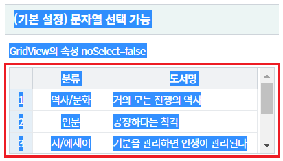
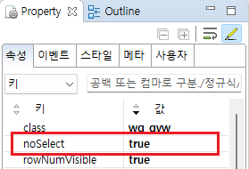
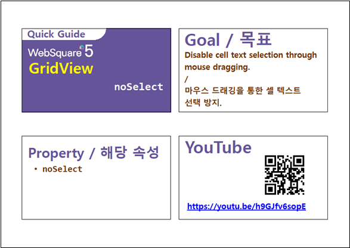

GridView의 셀의 문자열 선택을 방지 예제입니다. 이 기능은 속성 noSelect을 true로 설정하여 사용할 수 있습니다. 키보드 키(ctrl+a 등)를 또는 마우스 드래깅을 통해 문자열이 선택되지 않습니다.
셀이 편집 모드가 아닌 경우 동작합니다.
문자열 선택 방지
문자열 선택 가능
영역 [문자열 선택 방지] GridView를 확인합니다.
예제 화면에서 키 Ctrl+A를 입력합니다.
또는 GridView 영역을 마우스로 드래깅 합니다.
[브라우저(Chrome) 실행 예시 - 마우스 드래깅]

GridView 영역의 문자열을 제외하고 선택됩니다.
[브라우저(Chrome) 실행 예시]

영역 [(기본 설정) 문자열 선택 가능] GridView를 확인합니다.
예제 화면에서 키 Ctrl+A를 입력합니다.
또는 GridView 영역을 마우스로 드래깅 합니다.
[브라우저(Chrome) 실행 예시 - 마우스 드래깅]

GridView 영역의 문자열이 선택됩니다.
[브라우저(Chrome) 실행 예시]

STEP1. GridView의 속성을 정의합니다.
[필수] noSelect="true" //[default:false, true] GridView내 문자열 선택 방지 설정 여부
그림 1.웹스퀘어5 SP5 스튜디오의 Property View(속성창) 예시

[소스 코드 예시]
<!-- gridView 의 소스 본문 예시 --> <w2:gridView noSelect="true" dataList="data:dlt_books_1" style="height: 100px;"> <!-- 중략 --> </w2:gridView>
noSelect
[웹스퀘어5 SP5 개발 가이드] GridView
링크 : https://docs1.inswave.com/sp5_user_guide/bc10c1b82c9a2a0b#e1c4658baf7e726f
[웹스퀘어5 SP5 개발 가이드] GridView 드래깅을 통한 셀 텍스트 선택 방지 (noSelect)
링크 : https://docs1.inswave.com/sp5_user_guide/86bdcf48029b958b#8760ec786c5fdcd9
GridView 드래깅을 통한 셀 텍스트 선택 방지 (noSelect)
링크 : https://youtu.be/h9GJfv6sopE
